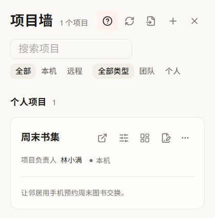
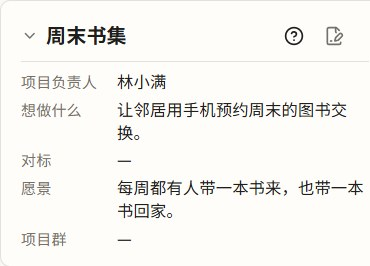
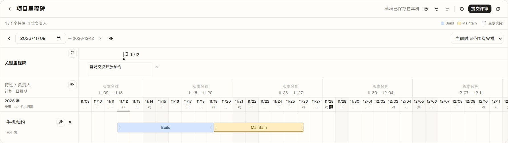
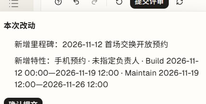

Builders’ Workbench
把产品想法变成
共同方向和阶段安排
一个两三人的小团队，可以先用项目名片把方向讲清楚，再为阶段成果排上日期。
-
在项目墙找到周末书集
从已纳入的项目中找到要讨论的项目，打开卡片上的「项目总览」。

-
把想做什么写进名片
记录「让邻居用手机预约周末的图书交换」，写明愿景和负责人。共享仓中的名片经评审合入后，团队可回看同一份方向。

-
为首场交换安排日期
写下「首场交换开放预约」作为阶段成果，为「手机预约」安排开发时间。草稿保存在本机，可继续调整。

-
核对改动，再交给队友评审
确认成果和排期再提交。团队仓评审合入后，成员可以更新并回看正式安排。
